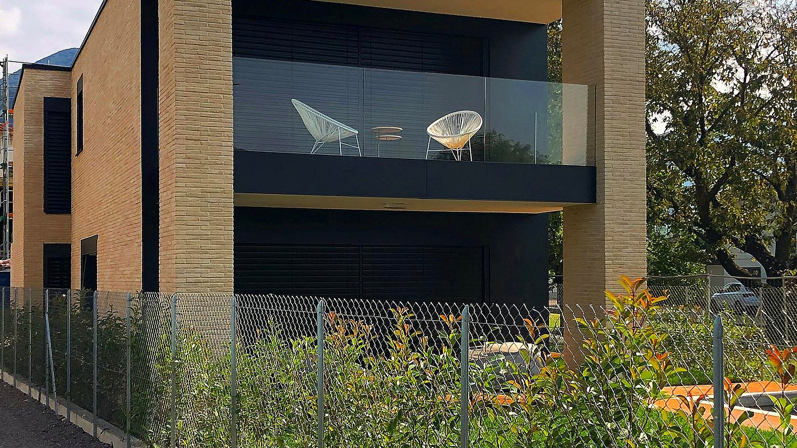
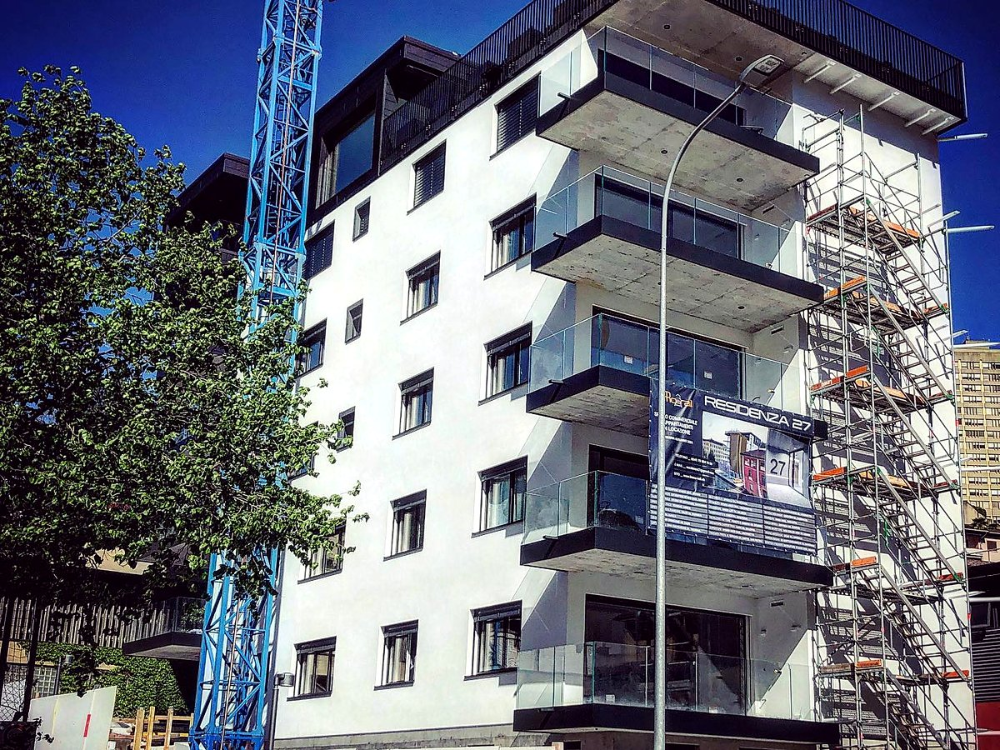
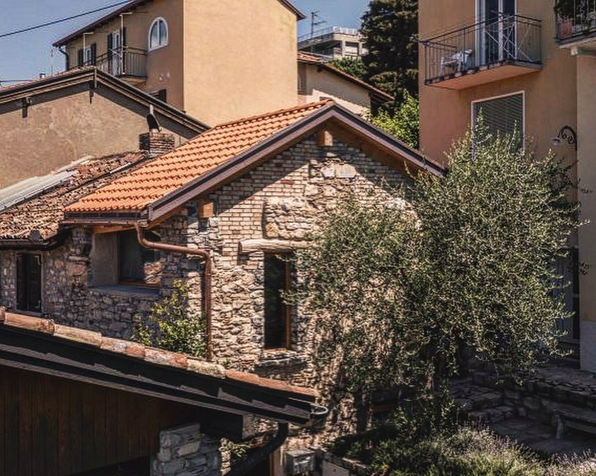

Impresa di gessatori · Mendrisiotto, Ticino
Intonaci, rifiniture in gesso, cartongesso, stucchi, restauri di opere murarie e rivestimento di facciate con cappotti termici. Tutto da un'unica impresa di fiducia in Ticino.
La nostra storia
Dal 1983 impresa di gessatori specializzata in intonaci in genere, rifiniture in gesso e simili, opere di cartongesso, restauri di opere murarie, stucchi, risanamento di calcestruzzi, opere speciali, pavimenti tecnici e rivestimento di facciate con cappotti termici.
Gessatori specializzati, dal fondo alla rifinitura.
Mendrisiotto e tutto il Ticino, da Chiasso a Lugano.
Nove lavorazioni coordinate da un unico interlocutore.
I nostri servizi
Dall'intonaco di fondo alle facciate con cappotto termico: ogni fase seguita dai nostri gessatori.
Rivestimento di facciate · Cappotti termici
Rivestimento di facciate con cappotti termici: la finitura esterna che cura l'estetica dell'edificio e il suo isolamento. Lo stesso mestiere del gessatore, dal fondo alla rifinitura, portato sulla facciata.


Restauri · Opere murarie
Restauri di opere murarie, stucchi e risanamento di calcestruzzi: il recupero di murature e dettagli che hanno fatto la storia degli edifici del Mendrisiotto, con la cura di un mestiere tramandato dal 1983.
Contatti
Contattateci per un sopralluogo o un preventivo senza impegno. Vi rispondiamo volentieri.
Via Sottobisio 26
6828 Balerna
Casella Postale 2147, 6830 Chiasso
Succursale 6943 Vezia
Natel 079 866 30 59
Fax 091 683 58 35